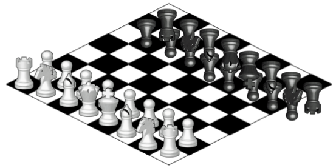

Welcome to the Escher Chess Game! (Play Time: < 30 mins)
There is a mystery at the heart of this game which the two players should try to solve after playing their first game together. In brief, there
are two seemingly contradictory ways of looking at this chess variant which are nonetheless somehow coherent with each other. The rough idea is
conveyed by the following Escher-like illusion.

Before getting to the real game, however, you should start by play around with this demonstration page in order to learn (most of) the game's
rules and to familiarize yourself with the user interface.
This game must be played with a friend. While you can be sitting side-by-side for this demo game, it will be important for the next game (i.e.,
the real game) that you cannot see each other's screens. You can both open this webpage separately on your own devices and the game state will
automatically be synchronized across the two browser sessions once you are in the same game room.
Next you will need to decide together what size of board to play on: either 5x13 or 8x8. Despite its odd size, the 5x13 version of this game is actually the simpler one and is more like standard chess. I recommend starting with the 5x13 board if this is your first game of Escher Chess. After picking a board size the players should decide who will play as white and who will play as black.
Loading Rules Text...
Please read all of this text before you click the link below to play Escher Chess.
As I noted above, there is a mystery at the heart of this game which the two players should try to solve after playing their first game together. In
order to preserve the mystery until the end of the first game, however, a rather strict separation between the player's perspectives must be enforced.
During the first game, each player should be focused solely upon their own game experience. In this game (as in life) the only access that you will
have to the other player's experience is through their actions (and, later, through their words).
Concretely, the two players should now be seated apart from each other, and hence playing in different browser sessions. (Make sure that you are in
the same game room, see above.) Also, the next game should be played without talking to each other (e.g., mute your audio call). Once the first game
is over, however, the two players are encouraged to play again while looking at each other's screens and to compare notes regarding their respective
experiences with the game. The nature of the game's mystery will naturally become apparent at this point.
One Last Note:
Despite the fact that you and your opponent will be looking at different game boards, this is nonetheless a "complete information game". As you look
at your own game board, you see the entire game state (there is no hidden information). Moreover, you know exactly what your opponent's objective is
(to capture your king) and exactly how they can achieve this goal (their move-set will be explained on the next page). In these ways, your opponent
is no mystery to you. Nonetheless, however, they will still surprise you after the first game is over.
You can now click this link to play Escher Chess.